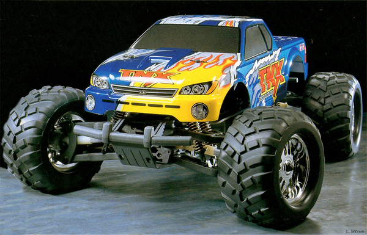

タミヤ TNX

引用元画像：タミヤ公式サイト
📋 基本情報
| メーカー | タミヤ（Tamiya） |
|---|---|
| 機種名 | TNX |
| 型番 | 43508 |
| 発売時期 | 2004年6月3日 |
| 生産状況 | 生産終了 |
| カテゴリー | ラジコンカー（1/8スケール エンジンRCカー） |
| サブカテゴリー | モンスタートラック（ニトロエンジン） |
📏 シャーシスペック
| シャーシ | TGM-03 |
|---|---|
| 全長 | 560mm |
| 全幅 | 408mm |
| 全高 | 260mm |
| ホイールベース | 360mm |
| トレッド | 前後共335mm |
| タイヤ幅/径 | 前後共87/148mm |
| フレーム | ジュラルミン製パワートレインデッキ＋強化樹脂製フレーム |
⚙️ 駆動系
| 駆動方式 | シャフトドライブ4WD |
|---|---|
| トランスミッション | 2スピード（ピン式、前進のみ） |
| ドライブシャフト | 硬化鋼製ドライブシャフト |
| エンジン | FS-18SR（3.0cc）※O.S.エンジンと共同開発 |
| 最高速度 | 約60km/h |
🔧 サスペンション
| 形式 | 4輪ダブルウィッシュボーン独立懸架 |
|---|---|
| ダンパー | 高性能オイルダンパー×8本 |
| 特徴 | 軽量サスペンションコンポーネント（アンスプラングウェイト削減） |
💡 特徴
タミヤ初の本格RTRニトロモンスタートラック
- O.S.エンジンとの共同開発による高性能FS-18SR（3.0cc）エンジン搭載
- コンパクトな2スピードトランスミッションで確実な変速を実現
- 圧倒的なパワー・ウェイト・レシオで驚異的な加速性能
超頑丈なシャーシ構造
- ジュラルミン製パワートレインデッキと強化樹脂製フレームのダブル構造
- シャフトドライブ4WD駆動
- 重量級ダブルウィッシュボーン独立懸架
- あらゆる地形に対応可能な耐久性
優れた走行性能
- 爆発的な加速と極限のトップスピード
- 計8本のオイルダンパーによる優れたハンドリングと安定性
- リコイルスターター標準装備で簡単エンジン始動
レース実績
- 2004年Monster Madness IIイベントで優勝
- Pro-Line Maxx Challengeレースで活躍
- TNX Pro Racing Editionも発売
🔧 ぽすとそに工房での修理実績
修理難易度
★★★★★（非常に困難、古い情報ばかりで、ネットでもかなりの情報の少なさです。整備難易度は高いと思います。）
よくある故障・注意点
- エンジン関連部品の経年劣化（20年以上前の機種のため）
- パーツ供給がほぼ無いため、修理には高度な技術と代替パーツの工夫が必要
- 燃料システムの劣化（タンク、チューブ類の交換が必須）
- トランスミッション内部の摩耗
修理のポイント
- エンジンのオーバーホールには専門知識が必須
- パーツが入手困難なため、他機種からの流用も検討が必要
- 燃料系統は定期的な交換が推奨される
- ヤフオク等で中古パーツを探すことも選択肢の一つ
その他の特徴
- 1/8スケールながら1/10スケールMTと同等の軽量化を実現
- 完全組立済み・エンジン調整済みのRTR（Ready-To-Run）仕様
- 工場完成モデルのため初期セットアップ不要